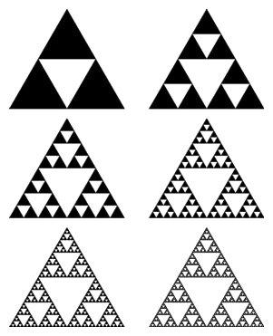
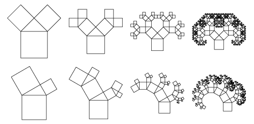

Če
omogočite JavaScript
, ta stran postane poučna prezentacija.
class: center, middle # Rekurzija Če hočete razumeti rekurzijo, morate najprej razumeti rekurzijo. --- ## Rekurzija v slikah .wh100[] --- .col2[.center[]] .col2[.center[]] --- .wh100[] --- .wh100[] --- ## Definicija <iframe width="100%" height="300" src="//bos.zrc-sazu.si/cgi/a03.exe?name=sskj_testa&expression=rekurz&hs=1" frameborder="0"></iframe> Rekurzija je **postopek**, ki je definiran (določen, **opisan**) **sam s sabo**. .small[Rešitev celotnega problema vključuje rešitev istega problema nad manjšim obsegom podatkov.] --- # Fraktali ... so [**samopodobni**](https://en.wikipedia.org/wiki/Self-similarity) in **definirani rekurzivno**  --- ## Sierpinski trikotnik .center[] --- ## Sierpinski trikotnik ... .center[] ??? Kot da bi imeli funkcijo `narisi_bel_trikotnik(mere_crnega_trikotnika)`. --- ## Cantorjevi krogi .center[] --- ## Kochova snežinka .center[] --- ## Pitagorovo drevo .center[] Oblika drevesa odvisna od začetnih parametrov sistema (kotov trikotnika). --- ## Pitagorovo drevo ...  --- ## Pitagorovo drevo ... .center[] --- ## Pitagorovo drevo ... .center[<iframe width="600" height="400" src="//www.youtube.com/embed/jEmSxcr-rRc?rel=0" frameborder="0" allowfullscreen></iframe>] --- ## Pitagorovo drevo ... .center[] --- .wh100[] --- ## Fraktali v naravi... --- ## Fibonaccijevo zaporedje Recimo, da imamo zaporedje števil, <br> kjer je **vsako naslednje** število **vsota prejšnjih dveh**: .u[**0**, **1**], 1, 2, 3, 5, 8, -- 13, -- 21, -- 34, -- 55, -- 89, ... -- Python koda: -- ```python def fib(N): return fib(N-1) + fib(N-2) # ponovimo rekurzivni klic fib() ``` -- Kaj se zgodi? -- ```python >>> def fib(N): ... return fib(N-1) + fib(N-2) ... >>> fib(5) Traceback (most recent call last): File "<stdin>", line 1, in <module> File "<stdin>", line 2, in fib File "<stdin>", line 2, in fib ... # par sto ali tisoč vrstic File "<stdin>", line 2, in fib File "<stdin>", line 2, in fib RuntimeError: maximum recursion depth exceeded ``` --- .center[] --- ## Ustavitveni pogoj Če želimo enkrat priti do rešitve (končati problem), potem očitno ne moremo nadaljevati v nedogled. Potreben je **ustavitveni pogoj**. Kdaj v postopku ne uporabimo spet istega postopka ampak se ustavimo? ??? Kdaj? -- <br><br> → Običajno takrat, **ko je problem dovolj majhen** (enostaven). .small[V primeru prejšnjih trikotnikov, krogov, snežinke in dreves: npr. ko je razdalja neke črte < 1px.] -- Ustavitveni pogoj najraje definiramo čimprej v funkciji, da ga ne pozabimo. Najbolje na začetku funkcije, **vsekakor pa vedno pred rekurzivnim klicem**! .small[(Sicer dobimo `RuntimeError: maximum recursion depth exceeded`...)] ??? Ker gremo drugače vedno spet v rekurzivni klic, namesto da bi rekurzijo zapustili. --- ## Ustavitveni pogoj ... Fibonaccijevo zaporedje: .center[0, 1, 1, 2, 3, 5, 8, 13, 21, 34, 55, 89, ...]<br> ```python def fib(N): # ??? kaj manjka tukaj ??? return fib(N-1) + fib(N-2) ``` ??? * Kaj manjka v kodi? * Katera **ključna beseda** je povezavana s 'pogojem'? (`if`) * Kdaj je **problem dovolj majhen**? --- ## Ustavitveni pogoj ... Fibonaccijevo zaporedje: .center[0, 1, 1, 2, 3, 5, 8, 13, 21, 34, 55, 89, ...]<br> ```python def fib(N): if N <= 1: # izhodni pogoj return N # ne ponovimo rekurzivnega klica else: return fib(N-1) + fib(N-2) ``` -- Kaj se zgodi? -- ```python >>> def fib(N): ... return N if N <= 1 else fib(N-1) + fib(N-2) ... >>> fib(5) 5 >>> [fib(i) for i in range(12)] [0, 1, 1, 2, 3, 5, 8, 13, 21, 34, 55, 89] ``` --- ## Zakaj rekurzija * Veliko problemov lahko rešimo rekurzivno (risanje dreves, sortiranje/iskanje elementov seznama, parsanje HTML značk; katerikoli problem, ki ga lahko razgradimo na enake podprobleme). * Lepša koda. Vsako kodo z rekurzijo lahko prepišemo v iterativno kodo (tj. z [_iteracijami_](https://sl.wikipedia.org/wiki/Iteracija), brez rekurzije). .col2[ Rekurzivna koda: ```python def fib(N): if N <= 1: return N else: return fib(N-1) + fib(N-2) ``` ] .col2[ Iterativna koda: ```python def fib_iter(N): a, b = 0, 1 # prvi dve števili zaporedja while N > 0: N, a, b = N-1, b, a+b return a ``` ] ??? * Zakaj je desna koda iterativna? Kje je rekurzija v desni kodi? V levi? * Katera koda vam je bolj všeč? * Katera koda je boljša? * Nerekurzivna koda je (v tem primeru) **hitrejša** in zasede **manj pomnilnika**. Ne pa vedno! -- #.center[Vprašanja?]